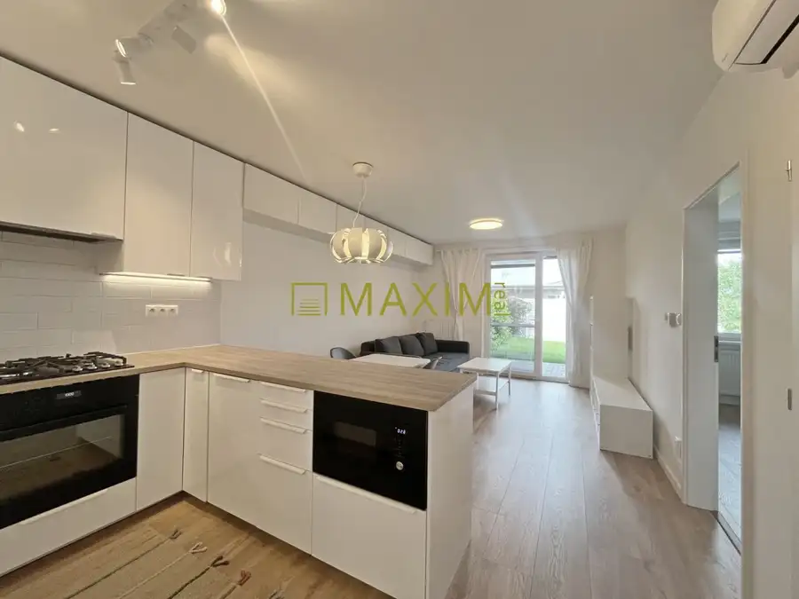
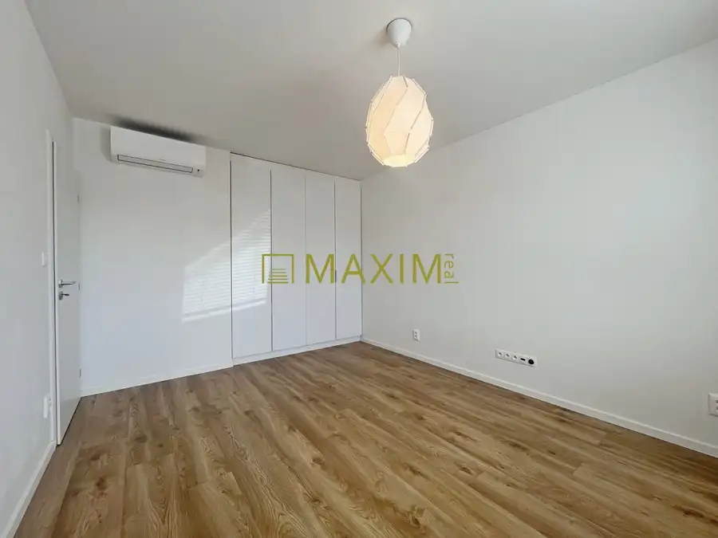
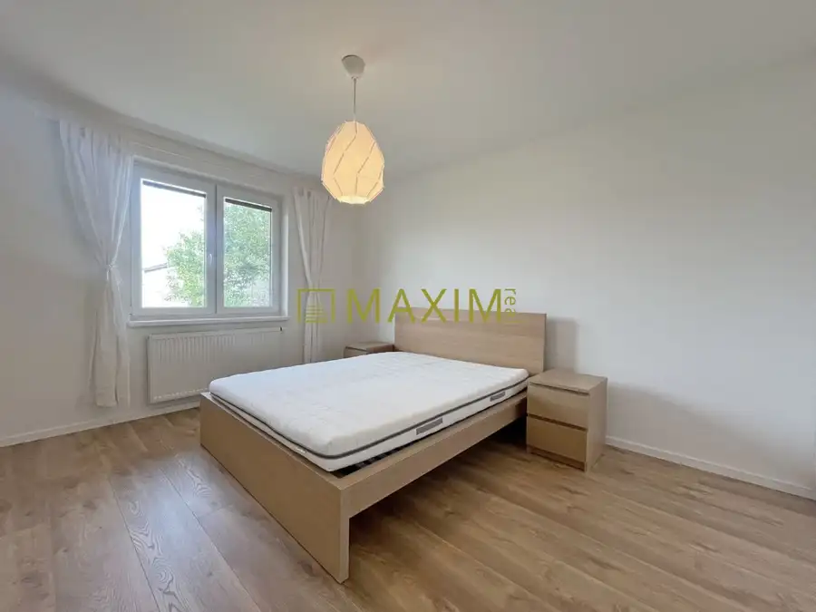
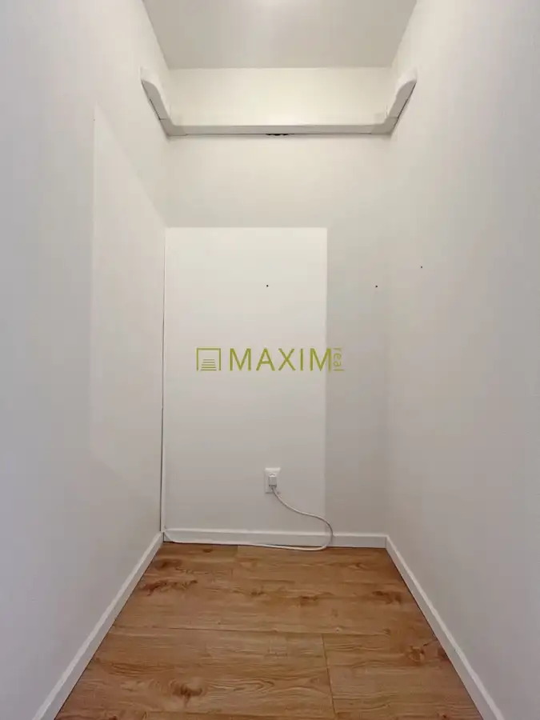
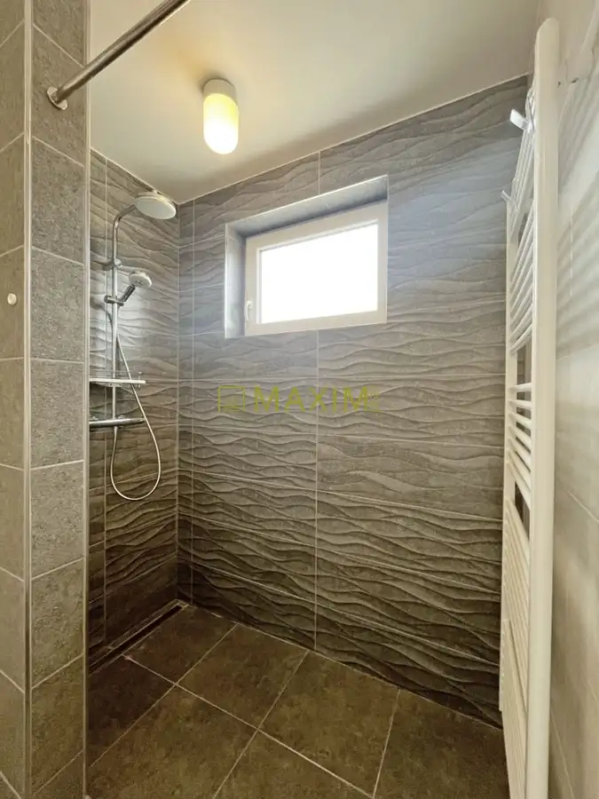
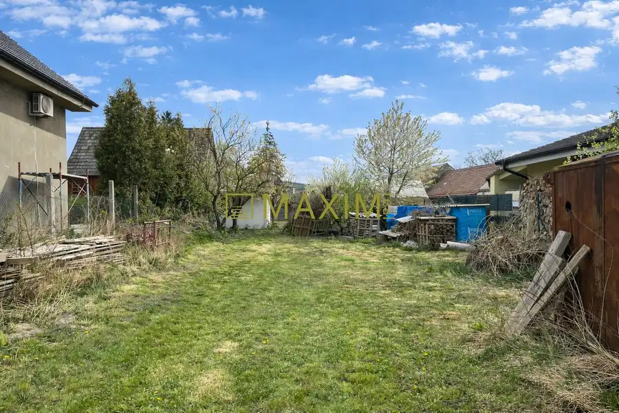
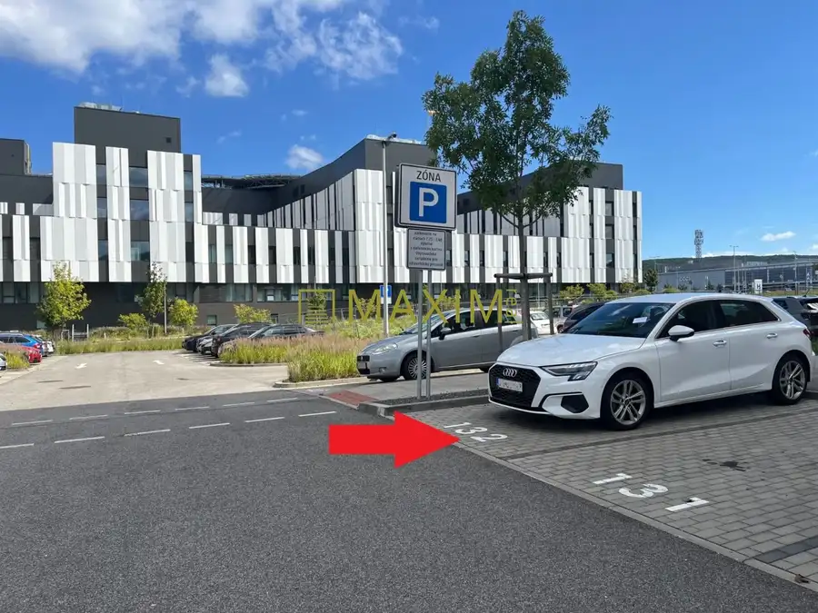
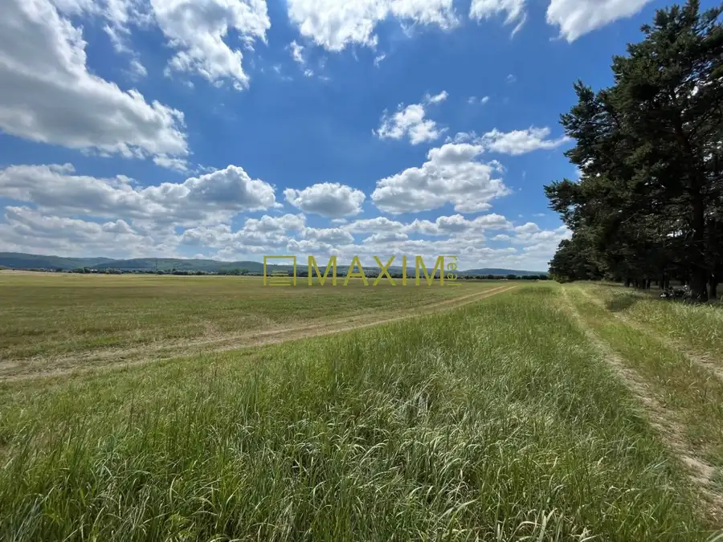

Rodinný dom v obci Láb, kľudná slepá ulica
Láb





- Plocha65.4 m²
- StavPôvodný stav
- VlastníctvoOsobné
- Energetická triedaB
O nehnuteľnosti
Aktuálne v ponuke na predaj 3 izbový rodinný dom v Lábe, ktorý je súčasťou radovej zástavby troch rodinných domov (predáva sa krajný dom). Podlahová plocha domu je 65,4 m2, pozemok má celkovú výmeru 250 m2 (z toho zastavaná plocha 80 m2).Výhodou domu je jeho praktické dispozičné riešenie, komora pri kuchyni a samostatný vstup do dvora. Kúrenie a ohrev teplej vody je riešený plynovým kotlom a v každej miestnosti je tiež samostatná klimatizácia. Samostatná klimatizácia s reguláciou v každej miestnosti zaručuje v čoraz teplejších letách komfortný pocit v každej miestnosti. Nie je potrebné nechať bežať jedinú klimatizáciu na vyšší výkon a mať neustále otvorené dvere do ostatných izieb bez potrebného súkromia (dve klimatizačné jednotky v izbách sú úplne nové a v záruke). Elegantná kuchyňa so vstavanými spotrebičmi (chladnička s mrazničkou, umývačka riadu, mikrovlnná rúra, elektrická rúra na pečenie, plynová varná doska) s jednotným dizajnom s podstropnými odkladacími skrinkami prechádzajúcimi do obývacej časti je len bonusom tejto ponuky. Inžinierske siete: voda, elektrina, plyn, kanalizácia.Obec Láb disponuje všetkým potrebným k spokojnému bývaniu, je tu škôlka (tri triedy), 9.r základná škola, zdravotné stredisko, lekáreň, ihrisko, pošta, potraviny, vyhľadávaná reštaurácia s pizzeriou, čerpacia stanica a ďalšie potrebné služby. Na svoje si prídu turisti, cyklisti, hubári aj rybári. Dopravné napojenie autom na diaľnicu je 8,8 km smer Zohor, prípadne autobusové spojenie je smer Malacky a Bratislava. Cena domu s pozemkom je 235.000,-Eur a je konečná, s kompletným právnym aj hypotekárnym servisom a poplatkami. Kontakt: Ľubomír Matlovič, matlovic@maximreal.sk, tel.: 0948 676 848 Prečo kúpiť tento dom?•Prakticky riešený dom, samostatná komora pri kuchyni•Klimatizované všetky tri miestnosti – samostatne, žiadne otvorené dvere bez súkromia •Kľudná slepá ulica, pohodlné parkovanie•Moderná a rozvíjajúca sa obec so všetkými potrebnými službami•Bezproblémová a rýchla dostupnosť hlavného mestaPrečo kupovať nehnuteľnosť prostredníctvom realitnej kancelárie Maxim Real? • Cena nehnuteľnosti je pre Vás konečná- neplatíte žiadne poplatky spojené s predajom a prevodom nehnuteľnosti. • Okrem bezplatného právneho servisu, spracovania kúpno-predajných zmlúv , spracovania návrhu na vklad do katastra, hradíme tiež poplatky za podanie návrhu na vklad do katastra, správne poplatky za výpis z listu vlastníctva a poplatky za overenie podpisov na kúpnych zmluvách. • K dispozícii je Vám hypotekárny špecialista, ktorý pohodlne zariadi Vašu hypotéku a vo väčšine prípadov dojednáva výhodnejšie podmienky, ako keď si klient hypotéku vybavuje sám. Jeho služby sú pre vás zdarma, a v prípade ich využitia pri výške úveru aspoň 70.000,- Eur, refundujeme Vám 150,- Eur z poplatku za znalecký posudok.• Kompletný servis máte vyriešený pohodlne a bezpečne, advokátsky servis je samozrejmosťou.Kontakt: Ľubomír Matlovič, matlovic@maximreal.sk, tel.: 0948 676 848
Parametre
- Druh
- Rodinný dom
- Dátum zverejnenia
- 21. 09. 2026
- Energetický certifikát budovy
- B
- Plocha pozemku
- 0 m²
- Počet izieb / miestností
- 3
- Počet nadzemných podlaží
- 1
- Rok výstavby
- 2018
- Stav nehnuteľnosti
- Pôvodný stav
- Terén pozemku
- Rovinatý
- Typ
- Predaj
- Typ konštrukcie
- Tehlová
- Vlastníctvo
- Osobné
- Vybavenie
- Terasa, Predzáhradka, Verejné parkovanie
- Zariadenie
- Zariadené kompletne
- Zastavaná plocha
- 80 m²
- Úžitková plocha
- 65.4 m²
Kde to je


Mohlo by Vás zaujímať

PozemokNové 180 000 €Stavebný pozemok so záhradným domčekom, Jablonové Jablonové 572 m²
Komerčné priestoryNové Cena na vyžádáníParkovacie miesto Bory Promenáda, pri nemocnici Lamač, Bratislava 12 m²
PozemokNové Cena na vyžádáníLúka pod lesom v Jablonovom Jablonové 4223 m²